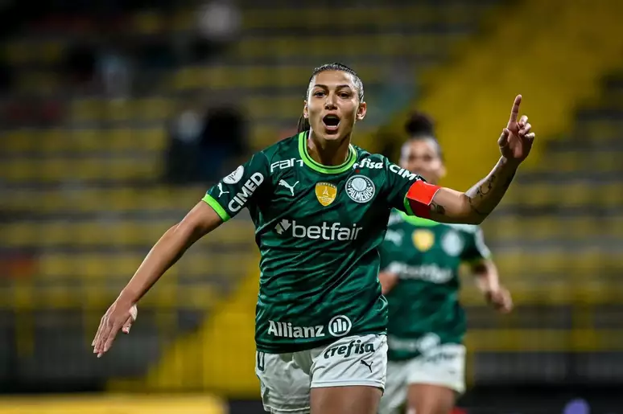
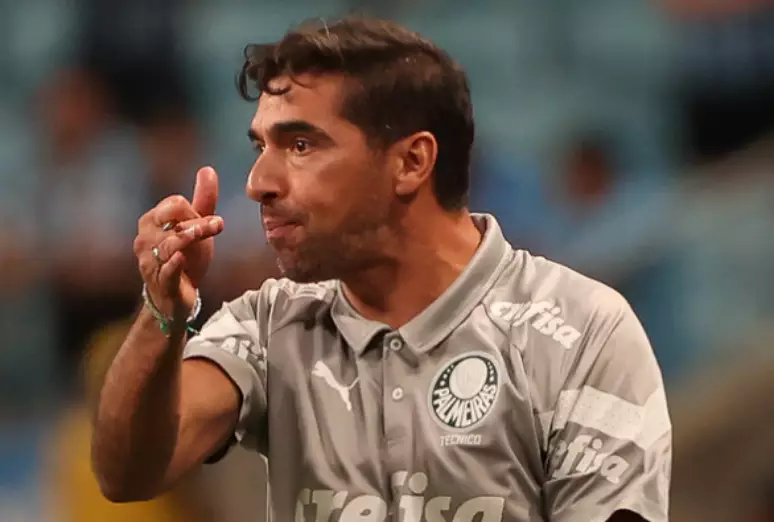
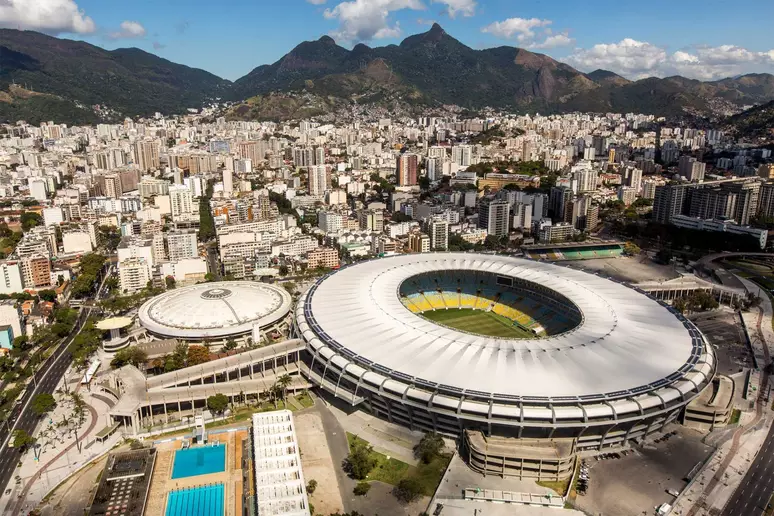
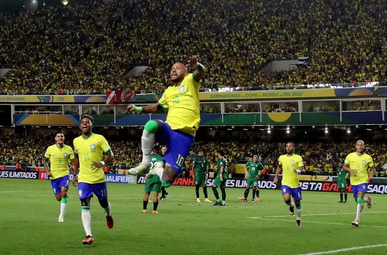

O Palmeiras garantiu seu avanço para a semifinal da Libertadores feminina com uma vitória
maiúscula sobre o Olímpia, do Paraguai, neste sábado. As palestrinas, que estão com 100% de
aproveitamento na competição, venceram por 6 a 0 no estádio Metropolitano de Techo, em Bogotá, na
Colômbia, pelas quartas de final. Bia Zaneratto (2), Amanda Gutierres (2), Lais Estevam e Sâmia
marcaram para a equipe alviverde.
https

Técnico do Palmeiras, Abel Ferreira foi julgado pelo Supremo Tribunal de Justiça Desportiva
(STJD) nesta terça-feira, 10, e punido com dois jogos de suspensão. O português foi denunciado
por sua fala durante a partida entre Grêmio e Palmeiras, que terminou em vitória gaúcha por 1 a 0,
e deve desfalcar o Verdão nos duelos contra Atlético-MG e Coritiba pelo Brasileirão.
Em vídeo divulgado pelas redes sociais do Flamengo, Tite falou pela primeira vez como treinador do clube,
e não escondeu o orgulho de vestir a camisa vermelha e preta do Rubro-Negro.

Com a decisão da Conmebol Libertadores chegando, o impasse entre Flamengo e Conmebol ganha novos
capítulos a cada dia. Sendo o palco da grande final, o Maracanã também que pertence ao consórcio
formado por Flamengo e Fluminense, vendo sendo o motivo do embate entre o Rubro-Negro e a entidade
sul-americana. O Flamengo, que já utilizará o estádio no dia 22 de outubro contra o Vasco, também deseja
utilizar o estádio contra o Red Bull Bragantino e assim cria "climão" com Fluminense.

Os altos custos dos ingressos para os jogos das Eliminatórias da Copa do Mundo de 2026 estão afastando
torcedores 'do povo' dos estádios de futebol.
Na primeira rodada do torneio, disputada em setembro, a média do preço dos ingressos foi de
aproximadamente 102 dólares (cerca de R$ 527, na cotação atual).